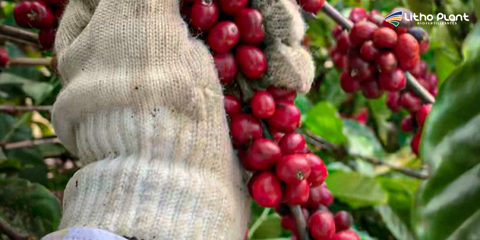
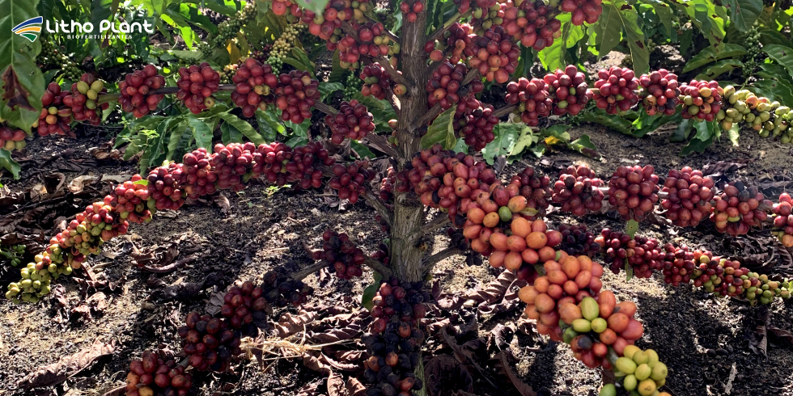

Cultivo de Café: Dicas Para Resultados de Sucesso
 Um manejo bem planejado, do solo à colheita, é fundamental para colher café de alta qualidade.
Um manejo bem planejado, do solo à colheita, é fundamental para colher café de alta qualidade.
Na Litho Plant, indústria de biofertilizantes em Linhares, entendemos a importância do cultivo de café e os desafios que os produtores enfrentam para garantir uma colheita de alta qualidade.
O cultivo de café é uma atividade de grande relevância econômica, especialmente no Brasil, um dos maiores produtores mundiais.
No entanto, alcançar uma produção de café de alto padrão exige técnicas adequadas, cuidados contínuos e utilização de insumos eficazes.
O uso de biofertilizantes é uma estratégia importante para melhorar produtividade e saúde das plantas, favorecendo crescimento vigoroso e maior resistência a pragas e doenças.
Este artigo traz dicas essenciais para obter bons resultados na cafeicultura, desde a preparação do solo até a colheita, mostrando como os biofertilizantes Litho Plant podem transformar a produção.
Preparação do solo para o cultivo de café
A preparação adequada do solo é decisiva para o sucesso do cultivo de café. Um solo bem manejado fornece nutrientes, água e ambiente ideal para o sistema radicular.
Análise do solo
Antes do plantio, é fundamental realizar análise detalhada do solo para identificar níveis de nutrientes e pH.
Para o café, o pH ideal costuma ficar entre 5,5 e 6,5, faixa em que a maior parte dos nutrientes fica mais disponível. Quando necessário, a correção com calcário ajusta o pH e melhora a fertilidade.
Estudos em instituições como a UFLA mostram que a correção do pH aumenta a disponibilidade de fósforo, cálcio e magnésio, além de favorecer a atividade microbiana e a estrutura do solo.
Coletar amostras em diferentes pontos da área e enviar para laboratório fornece um diagnóstico preciso, permitindo ajustes finos no manejo da fertilidade.
Uso de biofertilizantes
Biofertilizantes para café são aliados importantes na preparação e na manutenção da qualidade do solo.
Produtos Litho Plant ajudam a enriquecer o solo com microrganismos benéficos, melhorando a estrutura, a retenção de água e a disponibilidade de nutrientes.
Pesquisas de instituições como a Embrapa destacam que biofertilizantes podem aumentar a produtividade do café, promover raízes mais desenvolvidas e reduzir a dependência exclusiva de fertilizantes químicos.
Microrganismos presentes nesses produtos atuam na decomposição da matéria orgânica, fixação de nitrogênio e solubilização de fósforo e outros nutrientes, tornando-os mais acessíveis às plantas.

Biofertilizantes Litho Plant ajudam a construir solos mais vivos e férteis, base de lavouras de café produtivas.O uso de biofertilizantes também contribui para práticas mais sustentáveis, melhorando a eficiência de uso de nutrientes e reduzindo impactos ambientais.
Na Litho Plant, os biofertilizantes são formulados com tecnologia voltada às necessidades da cafeicultura, proporcionando nutrição equilibrada e crescimento saudável.
Plantio e manejo das plantas
O plantio e o manejo adequado das plantas de café são etapas críticas para garantir uma lavoura produtiva e longeva.
Escolha das mudas
Selecionar mudas de alta qualidade é fundamental: elas devem ser sadias, bem enraizadas e livres de pragas e doenças.
Também é importante optar por variedades adaptadas às condições climáticas e de solo da região, equilibrando produtividade, qualidade de bebida e resistência a doenças.
Espaçamento e densidade
O espaçamento adequado garante que cada planta tenha luz, água e nutrientes suficientes, além de facilitar o manejo.
Na prática, é comum adotar espaçamentos em torno de 2,5 a 3 metros entre linhas e 1,5 a 2 metros entre plantas, ajustando conforme sistema de produção, relevo e mecanização.
Adubação e irrigação
A adubação regular com biofertilizantes e fertilizantes minerais bem planejados é essencial para o bom desenvolvimento do cafeeiro.
Biofertilizantes complementam a adubação tradicional, fornecendo nutrientes de forma gradual e melhorando a eficiência do uso.
A irrigação adequada, especialmente em períodos secos, ajuda a evitar estresse hídrico e quedas de produtividade. Sistemas por gotejamento são eficientes para levar água diretamente às raízes.
Manejo de pragas e doenças
Pragas e doenças podem comprometer severamente a lavoura de café se não forem manejadas de forma preventiva e integrada.
Identificação de pragas e doenças
Monitorar a lavoura com frequência permite identificar precocemente problemas como bicho-mineiro, broca-do-café, ferrugem, cercosporiose e outras doenças foliares.
A ação rápida diante dos primeiros sintomas é fundamental para evitar perdas maiores.
Controle biológico e fortalecimento das plantas
Métodos de controle biológico e o uso de biofertilizantes ajudam a fortalecer o sistema natural de defesa das plantas, tornando o cafeeiro mais resistente a ataques.
Um manejo integrado, que inclui nutrição equilibrada, uso de produtos biológicos e monitoramento, reduz a necessidade de intervenções exclusivamente químicas.
Colheita e pós-colheita
A colheita e o manejo pós-colheita são decisivos para a qualidade final do café.
Momento da colheita
A colheita deve ser realizada quando os frutos estão maduros, com maior percentual de cerejas vermelhas, para garantir melhor qualidade de bebida.
Técnicas de colheita
A colheita pode ser manual ou mecânica, conforme tamanho da área, relevo e nível de tecnologia da fazenda.
A colheita manual permite maior seletividade na retirada de frutos maduros, enquanto a mecânica oferece rapidez e eficiência em áreas adaptadas.
Pós-colheita
Após a colheita, o café deve ser processado com cuidado: seleção, lavagem, fermentação (quando utilizada), secagem e armazenamento adequado são etapas essenciais.
Um pós-colheita bem conduzido preserva atributos sensoriais e agrega valor ao produto final.

Colheita no ponto ideal e pós-colheita bem feitos são determinantes para a qualidade da bebida.Biofertilizantes Litho Plant: soluções para o cultivo de café
A Litho Plant oferece uma linha completa de biofertilizantes e produtos especiais desenvolvidos para atender às exigências da cafeicultura moderna.
Turfa Gel
Turfa Gel é o primeiro biofertilizante de turfa do Brasil, desenvolvido com substâncias húmicas (ácidos húmicos e fúlvicos) que promovem melhorias físicas, químicas e biológicas no solo.
O produto contribui para maior retenção de água, melhor estrutura do solo e maior disponibilidade de nutrientes, favorecendo o desenvolvimento do sistema radicular e o vigor da lavoura de café.
ATIVAR
ATIVAR é um biofertilizante com funções quelantes, complexantes e carreadoras de nutrientes, potencializando a eficiência de fertilizantes aplicados em conjunto.
Ao ser misturado com outros fertilizantes, ATIVAR aumenta a disponibilidade e a absorção de nutrientes, tornando o manejo nutricional mais eficiente.
Baltiko
Baltiko é um biofertilizante à base da alga Ascophyllum nodosum, altamente concentrado, que proporciona bioestimulação das plantas.
Seus compostos ajudam a melhorar o metabolismo, a tolerância ao estresse e o equilíbrio hormonal das plantas de café, favorecendo maior vigor e produtividade.
Pesquisa e desenvolvimento
A Litho Plant investe continuamente em pesquisa e desenvolvimento para aperfeiçoar seus produtos e atender às necessidades dos cafeicultores.
Parcerias com instituições de pesquisa e universidades contribuem para o desenvolvimento de biofertilizantes que entregam resultados consistentes em produtividade e sustentabilidade.
Conclusão
O cultivo de café exige atenção em todas as etapas, da preparação do solo ao pós-colheita. Quando bem conduzidas, essas fases garantem lavouras produtivas e grãos de alta qualidade.
Ao incorporar biofertilizantes de alta qualidade no manejo, como os produtos da Litho Plant, é possível potencializar o desempenho da lavoura, melhorar a eficiência do uso de nutrientes e aumentar a resiliência das plantas.
Se você deseja elevar a eficiência da produção de café, entre em contato com a Litho Plant para conhecer em detalhes a linha de biofertilizantes e montar um programa de manejo ajustado à realidade da sua propriedade.